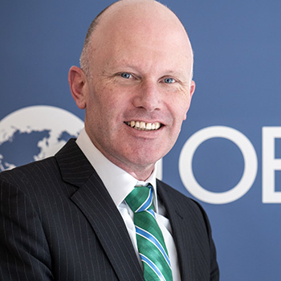

Jón R. BLONDAL
- Head of Division and Editor-in-Chief of the OECD Journal on Budgeting
- From Reykjavík. Icelandic national
- Previously with the Icelandic Ministry of Finance and Office of the Prime Minister
- Recipient of the Award for Lifetime Professional Achievement from the American Society for Public Administration and the Association for Budgeting and Financial Management
- Graduate of The George Washington University, Washington DC

Andrew BLAZEY
- Deputy Head of Division and Lead, Green Budgeting
- From Wellington. New Zealand national
- Previously Budget Director of New Zealand
- Led the development of New Zealand’s Well-Being Budget
- MBA from Chinese University of Hong Kong
Seok AHN
- Senior Policy Analyst (On secondment)
- From Sejong. Korean national
- Previously with Korean Ministry of Personnel Management
- BA from Jeonbuk National University (Korea); MA from University of Birmingham (UK)
Alana BAKER
- Policy Analyst, Public Employment and Management
- From Calgary, Alberta. Canadian national
- Before joining the OECD with various policy and economics research centres. Previously, journalist at the Canadian Broadcasting Corporation
- MPP from University of Cambridge; MRes from University College London (UCL); MBA from Porto Business School
Emily BAKOS
- Policy Analyst, Public Employment and Management
- From New York. US national
- Before joining the OECD with a strategy and management consulting firm. Previously with the US Government
- MA from Johns Hopkins University (SAIS); BA from Fordham University
Indre BAMBALAITE
- Policy Analyst, Performance Budgeting
- From Klaipeda. Lithuanian national
- Previously with the OECD's Economics Department
- MA from Sciences Po Paris; BSc from ISM University of Management and Economics in Vilnius, Lithuania
Yosra BEDAIR
- Resident Advisor - Cairo
- From Cairo. Egyptian national
- Previously with World Bank and Egyptian Ministry of Finance
- M.Phil. from University of Cambridge; B.A. from American University in Cairo (AUC)
Titouan CHASSAGNE
- Junior Policy Analyst, Policy Evaluation and Spending Reviews
- From Aix-en-Provence. French national
- Previously with the United Nations and UNDP
- MSc (Research) from the London School of Economics (LSE); MA from Sciences Po Paris; BA from McGill University.
Sean DOUGHERTY
- Lead, Fiscal Relations Across Levels of Government
- From Houston. American national
- Previously with OECD’s Economics Department
- PhD from the Paris School of Economics, MA from the University of Pennsylvania, BS from the Massachusetts Institute of Technology (MIT)
Brian FINN
- Lead, Expenditure Frameworks
- From Dublin. Irish national
- Previously with the SIGMA Programme. Prior to joining the OECD with the Irish Department of Finance.
- Graduate of Institute of Public Administration, Dublin
Meral GEDIK
- Publication Officer
- Managing Editor of the OECD Journal on Budgeting
- From Antalya, Türkiye. Turkish and French national
- Joined the OECD in 2010. Since 2020, working as an external consultant

Daniel GERSON
- Lead, Public Employment and Management
- From Vancouver, British Columbia. Canadian national
- Prior to joining the OECD with the Canadian Federal Public Service
- MA from University of British Columbia (Canada); MA from University of Potsdam (Germany)
Stéphane JACOBZONE
- Senior Advisor
- From Lyon. French national
- Previously held a number of positions in the Public Governance Directorate and the Directorate for Employment, Labour and Social Affairs. Prior to joining the OECD with the French Ministry of Finance and the National Institute for Economics and Statistics (INSEE)
- Graduate of Ecole Polytechnique and ENSAE (National Academy for Economics and Statistics)
Vaia KARAPANOU
- Policy analyst
- From Athens. Greek national
- Prior to joining OECD with the Greek Ministry of Finance and the General Accounting Office
- PhD from Erasmus University Rotterdam (the Netherlands)
Anne KELLER
- Policy Analyst, Financial Management and Reporting
- From Walldorf in Baden-Württemberg. German national
- Previously with the Development Co-operation Directorate. Prior to joining the OECD with UNESCO
- MA from University of Konstanz (Germany)
Tae Suk LEE
- Senior Policy Analyst (on secondment)
- From Sejong. Korean national
- Previously with the Korea Development Institute - KDI and the University of Auckland (New Zealand)
- BA, MA from Seoul National University; PhD from the University of Rochester (United States)

Margaux LELONG
- Policy Analyst, Green Budgeting
- From Nice. French national
- Prior to joining the OECD with the French Ministry of Economy and Finance. Previously with the Cour des comptes and Chambre régionale des comptes (Supreme Audit Institution)
- Also teaches Public Finances at Sorbonne University and French National School of Administration (ENA)
- MA from Sciences Po Aix; MA from Université Panthéon-Sorbonne and École Normale Supérieure (ENS)
Deborah MERRAN
- Administrative Co-Ordinator; Secretary to the Committee of Senior Budget Officials
- From Paris. French national
- Previously held a number of positions with investment banks in the US and the UK
- MA from University of Paris - Dauphine
Delphine MORETTI
- Lead, Financial Management and Reporting and Medium-term budgeting
- From Marseille. French national
- Prior to joining the OECD with the International Monetary Fund. Previously with French Ministry of Finance and Cour des comptes (Supreme Audit Institution)
- MA from Sciences Po Paris and the University of Aix-Marseille (France)
Dónal MULLIGAN
- Policy Analyst, Public Employment and Management
- From Dublin. Irish national
- Previously with the OECD’s Talent Management and Analytics Group. Prior to that with the Permanent Delegation of Ireland to the OECD and the Irish government trade development agency (Enterprise Ireland)
- MA from College of Europe, Bruges (Belgium)
Scherie NICOL
- Lead, Gender Budgeting, Parliaments and Independent Fiscal Institutions
- From Black Isle, Scotland. British national
- MA from Strathclyde University, Glasgow
- Helped set up the Financial Scrutiny Unit at the Scottish Parliament

Natalia NOLAN FLECHA
- Lead, Public Employment and Management Indicators
- From Melbourne, Florida. US national
- Prior to joining the OECD with the World Bank and various consulting firms
- MA from the London School of Economics (LSE)
Andrew PARK
- Policy Analyst, Spending Reviews
- From Los Angeles. American national
- Previously with the US Agency for International Development (USAID)
- MA from the London School of Economics and Political Science (LSE)

Silvia PICALARGA
- Researcher
- From Rome. Italian national
- Previously with the Italian Presidency of the Council of Ministries
- Double MA from the London School of Economics and Political Sciences (LSE) and Bocconi University (Italy)
Lyora RAAB
- Budget and Office co-ordinator
- From Munich. German national
- Previously with the International Herald Tribune
- BA from the American University of Paris
Claire SALAMA
- Lead, Performance monitoring and evaluation
- French / American national
- Previously with a strategy and management consulting firm
- MA from Sciences Po Paris; BA from Johns Hopkins University (United States)
Corey STEINHOUSE
- Event Coordinator
- From Virginia. US national
- Previously held various positions in the international education and entertainment industries.
- BA from the University of Virginia (US), MA from Université Paris 8 Vincennes - Saint-Denis
Lucy STERNE
- Policy Analyst, Spending Better
- From Brighton. British national
- Previously with HM Treasury in the United Kingdom, New Zealand Treasury, and most recently Head of Scottish Government Office based in the British Embassy in Paris
- BA and MA from Cambridge University
Nina Handlos THOMASSEN
- Junior Policy Analyst, Public Employment and Management
- From Aarhus, Denmark. Danish national.
- Previously with the Permanent Representation of Denmark to the EU and the European Parliament
- BSc from Aarhus University, MSc from Maastricht University
Alfrun TRYGGVADOTTIR
- Lead, Spending Reviews and Performance Budgeting
- From Reykjavík. Icelandic national
- Previously Deputy Budget Director of Iceland
- MA from Copenhagen Business School
- Led the implementation of the organic budget law in Iceland, including the rollout of performance budgeting and spending reviews
Camila VAMMALLE
- Lead, Budgeting for Health
- From Buenos Aires. French / Argentinean / Israeli national
- Previously with OECD’s Regional Development Division
- BA from the Universidad de San Andrés (Argentina); PhD from Sciences Po Paris
François VILLENEUVE
- Junior Policy Analyst, Public Employment and Management
- From Avignon. French national
- BA from ESSEC Business School (France); MA from Sciences Po Paris
Peter WELCH
- Senior Advisor
- From Gloucester, England. UK and Luxembourg national
- Previously with the European Court of Auditors (Director, Sustainable use of Natural Resources)
- Member CIPFA and CIMA
- Graduate of Exeter University